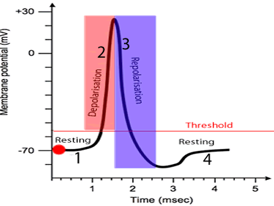

Charged & Ready — The −70 mV Resting State
Why a Resting Neuron Is Polarized
The Action Potential — An All-or-None Spike
Watch One Impulse, Then Step Through the Phases
Animation — One Action Potential

A stimulus drives the membrane to threshold (−55 mV); Na⁺ floods in (depolarization, upward spike), then K⁺ flows out (repolarization) and the membrane returns toward rest.
Reference — Voltage-Gated Na⁺ & K⁺ Channels

Voltage-gated Na⁺ channels open first (depolarization), then inactivate as voltage-gated K⁺ channels open (repolarization). Their timing produces the spike's shape.
Sending the Signal Down the Axon
Continuous vs. Saltatory Conduction — Toggle the Myelin
Reference — Saltatory vs. Continuous Conduction

Two factors speed conduction: myelination (impulse jumps node to node) and larger axon diameter. Bare, thin axons conduct slowest.
Refractory Periods & The Big Picture
When Can a Neuron Fire Again?
Absolute Refractory Period
✗ Cannot fire again — at all
While the voltage-gated Na⁺ channels are open or inactivated, no stimulus — however strong — can trigger another action potential. This guarantees each impulse is a separate, one-way event and sets the maximum firing rate.
Relative Refractory Period
◐ Can fire — but only with a strong stimulus
As the membrane repolarizes and hyperpolarizes, the neuron can fire again, but only if an unusually strong stimulus pushes it back to threshold. Excitability gradually returns to normal.
Rest
−70 mVPolarized & ready. Na⁺/K⁺ pump + leak channels keep the inside negative.
Threshold
−55 mVThe trigger point. Reach it and the spike fires all-or-none.
Depolarize
Na⁺ inVoltage-gated Na⁺ channels open; the inside shoots positive (~+30 mV).
Repolarize
K⁺ outNa⁺ channels inactivate; voltage-gated K⁺ channels open; charge falls.
Hyperpolarize
undershootA brief dip below −70 mV before the pump restores rest.
Conduct
saltatoryMyelin lets the impulse jump node to node — faster than continuous.